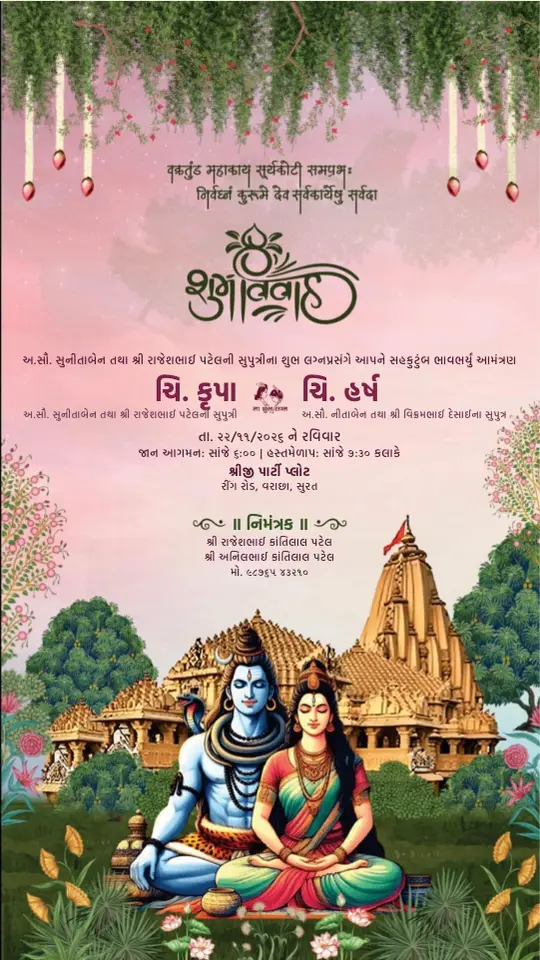
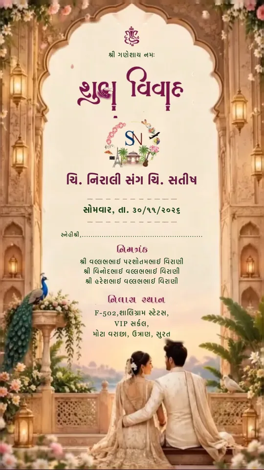
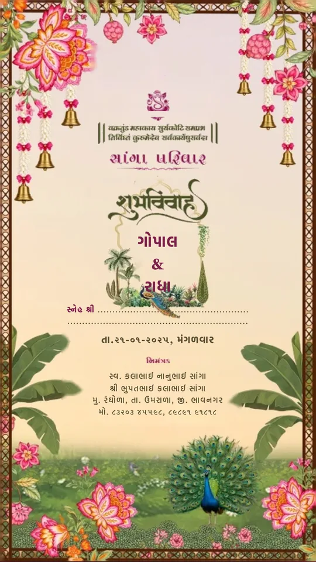
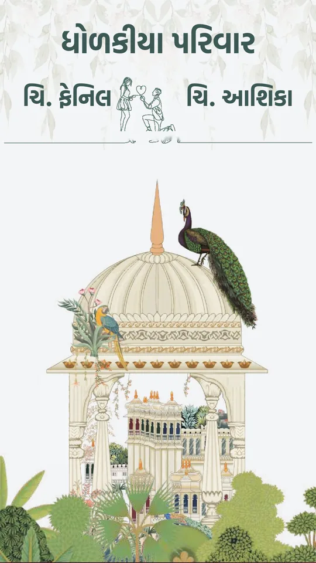
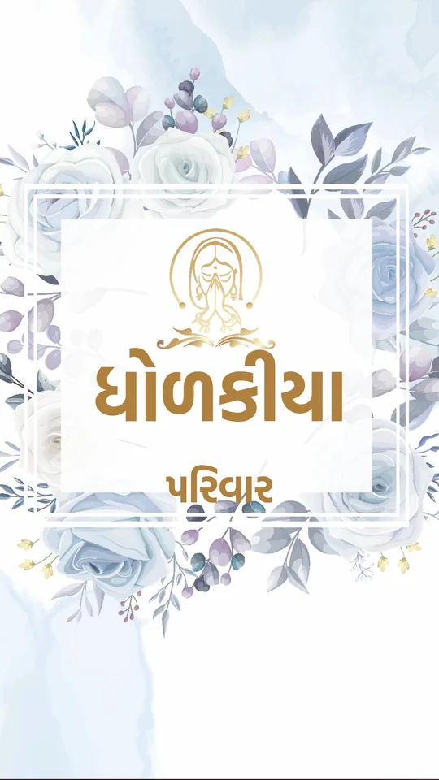
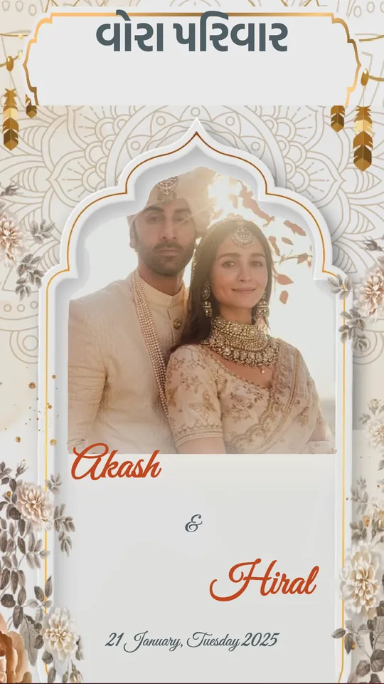
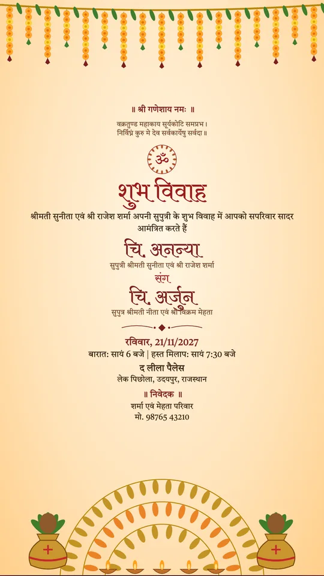
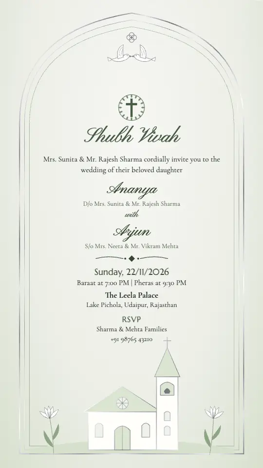

Save the Date · Ring Ceremony · Haldi · Mehendi · Sangeet · Wedding (Vivah) · Reception
Wedding invitation cards
The wedding card is the formal one and carries the most information: the invocation, both families, the muhurat, the baraat or jaan arrival, the venue, and the names of the relatives who are inviting you. On ShaadiTemplate a wedding card is a full multi-page set: a cover, a page listing every function, the wedding-day programme, a letter, the family names and a closing message, so guests get the whole schedule in one file.
This is the card most families print. Download the 5 by 7 inch print PDF for the press and the phone format for WhatsApp, both from the same corrected text. See the printing guide for paper and quantities.
Every design below opens in the editor with sample wording for this ceremony. You can switch any card to English, Hindi, Marathi, Gujarati, Punjabi or Tamil once it is open.

Sandhya Pink Dusk Kankotri
Gujarati · Lord Ganesha, Shiv-Parvati, Gel Mataji, Swaminarayan
Our featured design: a Gujarati kankotri built from the couple's own painted artwork, in pink dusk tones, with a different painted scene on every page. The cover shows Shiv and Parvati before a temple, under hanging lamps and leaves, with a calligraphed શુભ વિવાહ title. Text is set in Hind Vadodara, as on the original printed card.

Raj Mahel Lantern Kankotri
Gujarati · Lord Ganesha
A nine-page painted kankotri: a palace balcony with brass lanterns on the cover, then a doli, a sangeet ballroom, a mandap and a page for every function and family group, with headings cut from the original card and text in Hind Vadodara.

Mor Bagh Peacock Garden Kankotri
Gujarati · Lord Ganesha, Radha-Krishna, Shiv-Parvati (Mahadev)
A five-page peacock garden kankotri inside a carved wooden frame, with a pink Ganesha, Radha-Krishna on a swing and a garlanded mandap. Its pages carry invocations to the kuldevi, Dwarkadhish and Bholenath, so check them before you choose it.

Van Utsav Forest Kankotri
Gujarati · Lord Ganesha, Rajrajeshwari Butbhavani Mataji, Swaminarayan
A seven-page forest kankotri: a white pavilion with a peacock on the cover, then a golden swing between peacocks, a lotus pond, the wedding fire and a mandap canopy, with trees growing up every page and text in Hind Vadodara.

Neel Gulab Photo Kankotri
Gujarati · Lord Ganesha, Rajrajeshwari Butbhavani Mataji, Swaminarayan
An eight-page kankotri in blue watercolour roses with two photo pages, a gold ring and a full page, that show your own couple photo once you upload it. The letter page carries a picture of Butbhavani Mataji, so check it suits your family.

Soneri Jharokha Photo Kankotri
Gujarati · Lord Ganesha, Khodiyar Maa, Radha-Krishna, Bahuchar Maa, Swaminarayan
An eight-page kankotri that opens on your own couple photo inside a gold-edged arch, then cream watercolour pages with a small painted deity on each title: Ganesha, Khodiyar Maa, Krishna, Radha-Krishna and Bahuchar Maa.

Gulabi Kankotri
Gujarati · Lord Ganesha
A soft pink Gujarati kankotri with hanging leaves and flowers at the top and a painted landscape at the bottom: hills, trees, a temple shikhar and lotus flowers. It is a full multi-page wedding card with the functions, the wedding-day programme, the letter, the family names and the ટહુકો, all written in Gujarati with a Ganesha invocation and shlok.

Royal Udaipur Maroon & Gold
English · Lord Ganesha
Maroon and gold with a marigold toran, a tall arched frame and the Udaipur palace skyline drawn in gold along the bottom. The English text starts with Shri Ganeshaya Namah and the Vakratunda shlok, then the full wedding programme. It is the most traditional English-language wedding card in the set, and runs to several pages.

Shubh Vivah Traditional
Hindi · Lord Ganesha
Saffron fading to cream with a marigold toran across the top, a kalash on either side at the bottom and a half sunburst mandala between them. The Hindi text opens with श्री गणेशाय नमः and the shlok, then शुभ विवाह. A classic North Indian card with a full set of pages for the functions and family.

Anand Karaj Royal Blue
Punjabi · Ek Onkar
Royal blue with a red and gold zigzag border and a golden gurdwara dome reflected in water at the bottom. The Punjabi text, headed ਅਨੰਦ ਕਾਰਜ, opens with Ek Onkar and follows the Sikh wedding programme: the milni in the morning, then the Anand Karaj.

Kanchipuram Temple Silk
Tamil · Tirupati Balaji
Cream like raw silk, with the broad yellow and maroon temple border of a Kanchipuram sari, a temple gopuram at the bottom and lamps along the base. The Tamil text, headed திருமண அழைப்பிதழ், opens with an invocation to Venkateshwara and gives the muhurtham time.

Shubho Bibaho Alpana Red
English · Lord Ganesha
Sindoor red with a white alpana lace edge, the rice-paste patterns drawn at Bengali weddings, and a tall white topor, the groom's sola-pith crown, as the one hero image. English text with Shri Ganeshaya Namah and the shlok. Made for Bengali families who want an English card that still looks Bengali.

Kerala Kasavu Gold Border
English · Floral, no deity
Ivory handloom with gold kasavu bands along the edges, like a Kerala mundu or set sari, and a lit brass nilavilakku, the standing lamp, at the bottom. English text, no religious line, so it works for Hindu, Christian and mixed Malayali families.

Pelli Patrika Turmeric Mandapam
English · Tirupati Balaji
Pelli patrika is the Telugu wedding card. Deep turmeric gold with a mango-leaf thoranam across the top and a red-roofed kalyana mandapam at the bottom. English text with an invocation to Venkateshwara (Om Namo Venkatesaya) and a Telugu wedding programme: pellikuthuru, the muhurtham with jeelakarra bellam, and talambralu.

Jain Lagna Patrika Saffron
Gujarati · Jain (Ahimsa hand)
Pearl white and saffron inside a cusped temple arch, with a white marble Jain shikhar at the bottom. The emblem is the Ahimsa hand, and the Gujarati text includes the Namo Arihantanam line. It has the full set of kankotri pages: functions, wedding programme, letter and family names.

White Chapel Silver Arch
English · Christian (cross)
Ivory and sage with a silver gothic lancet arch, two doves at the top, a cross emblem, and a white chapel with a bell tower at the bottom. The invocation is Christian rather than Hindu. The sample wording is written for a church wedding: Holy Matrimony, a nuptial mass, the reception, a roce and a bridal shower. Suits Christian weddings in India and abroad.

Parsi Lagan Pastel Chalk
Gujarati · Floral, no deity
Blush, lilac and mint pastels with a chalk-white rangoli medallion at the bottom, drawn in dotted strokes like the tin-stencil chalk patterns Parsi homes make for celebrations. Gujarati text, as Parsi wedding cards traditionally are, with no religious line.

Kashmiri Chinar & Shikara
Hindi · Lord Ganesha
Walnut brown, like carved Kashmiri woodwork, with falling chinar leaves at the top and a shikara on Dal Lake with mountains behind it at the bottom. The Hindi text opens with a Ganesha line and shlok under शुभ विवाह.
Not sure what to write? Read the wording guide for every ceremony.